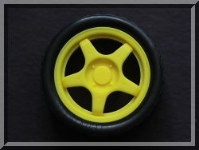
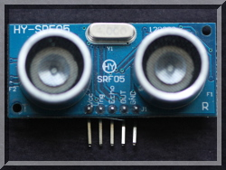
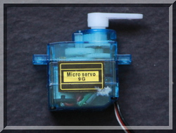

|  |  |  |
| pigpio pigpio C I/F pigpiod pigpiod C I/F Python pigs piscope Misc Examples Download FAQ Site Map | pig2vcdThe VCD file can be viewed using GTKWave. NotificationsNotifications consist of 12 bytes with the following binary format.typedef structseqno: starts at 0 each time the handle is opened and then increments by one for each report. flags: two flags are defined, PI_NTFY_FLAGS_WDOG and PI_NTFY_FLAGS_ALIVE. If bit 5 is set (PI_NTFY_FLAGS_WDOG) then bits 0-4 of the flags indicate a gpio which has had a watchdog timeout; if bit 6 is set (PI_NTFY_FLAGS_ALIVE) this indicates a keep alive signal on the pipe/socket and is sent once a minute in the absence of other notification activity. tick: the number of microseconds since system boot. It wraps around after 1h12m. level: indicates the level of each gpio. If bit 1<<x is set then gpio x is high. pig2vcd takes these notifications and outputs a text format VCD. VCD formatThe VCD starts with a header.$date 2013-05-31 18:49:36 $endThe header defines gpio identifiers and their name. Each gpio identifier must be unique. pig2vcd arbitrarily uses 'A' through 'Z' for gpios 0 through 25, and 'a' through 'f' for gpios 26 through 31. The corresponding names are 0 through 31. The VCD file may be edited to give a frendlier name, e.g. 8 could be changed to ENCODER_A if an encoder switch A is connected to gpio 8. Following the header pig2vcd takes notifications and outputs a timestamp followed by a list of one or more gpios which have changed state. The timestamp consists of a '#' followed by the microsecond tick. The state lines contain the new state followed by the gpio identifier. #1058747 |
[pigpio]
[pigpio C I/F]
[pigpiod]
[pigpiod C I/F]
[Python]
[pigs]
[piscope]
[Misc]
[Examples]
[Download]
[FAQ]
[Site Map]
© 2012-2020 |
e-mail: pigpio @ abyz.me.uk |
Updated: 30/04/2020 |